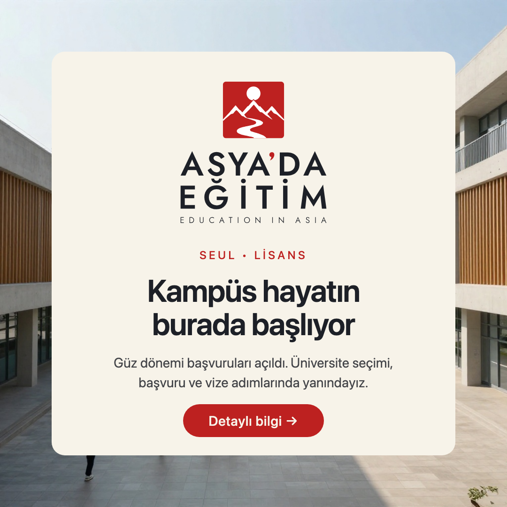
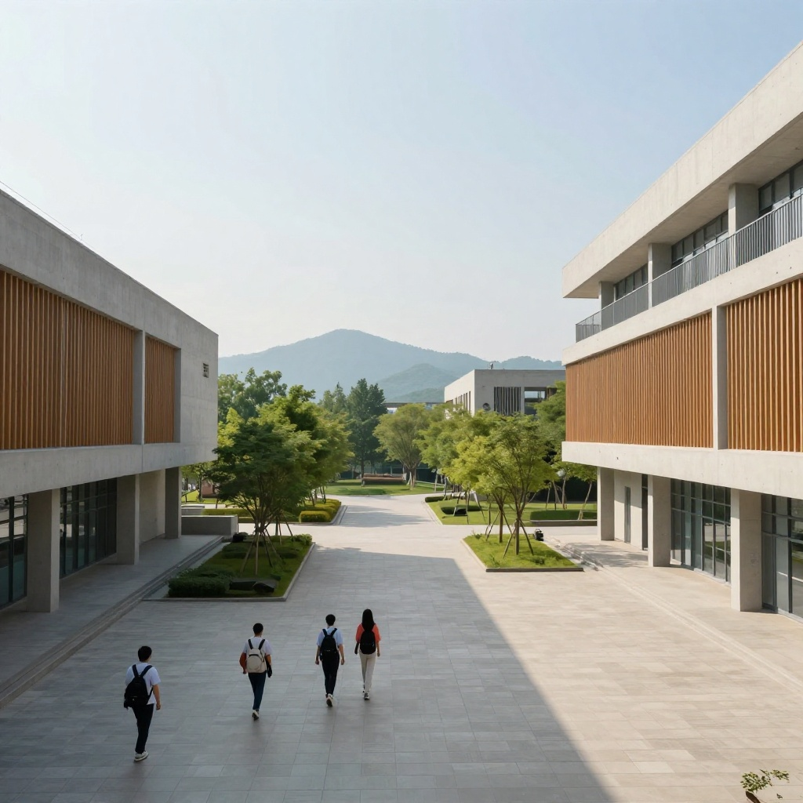
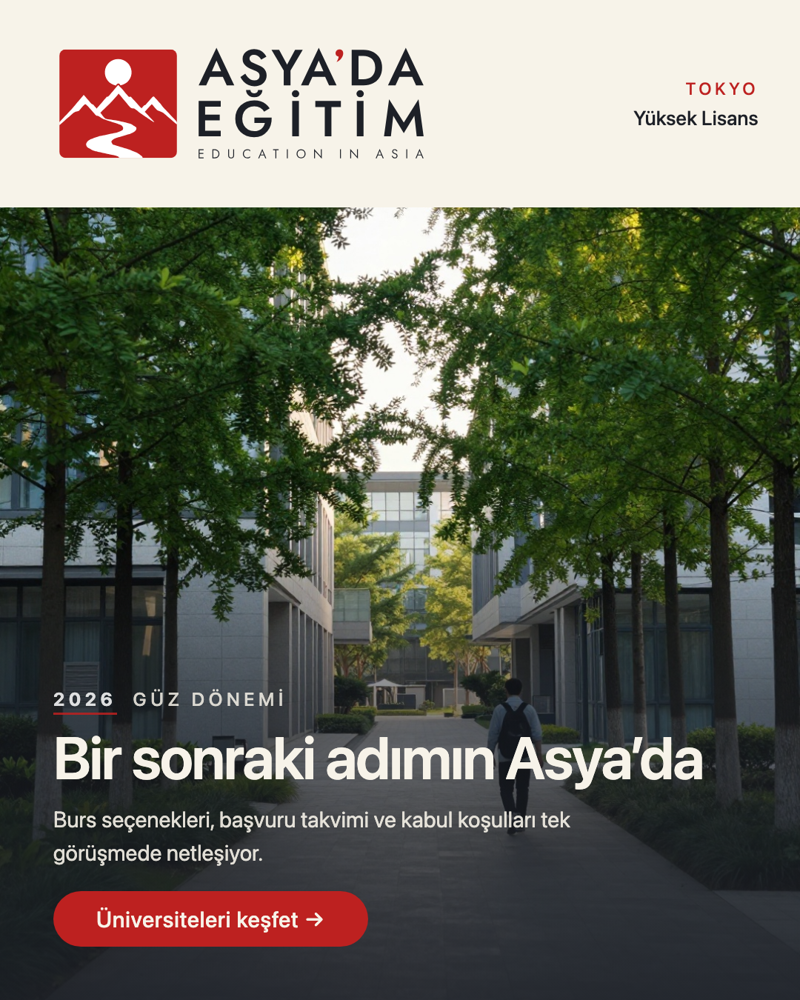
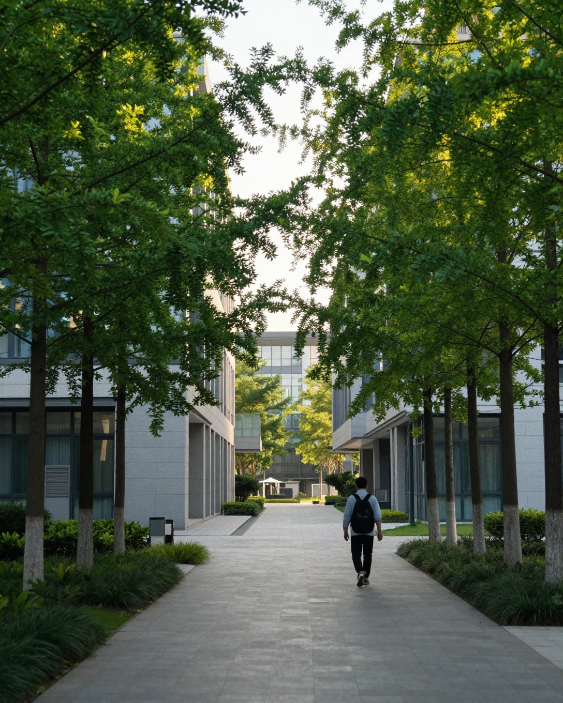
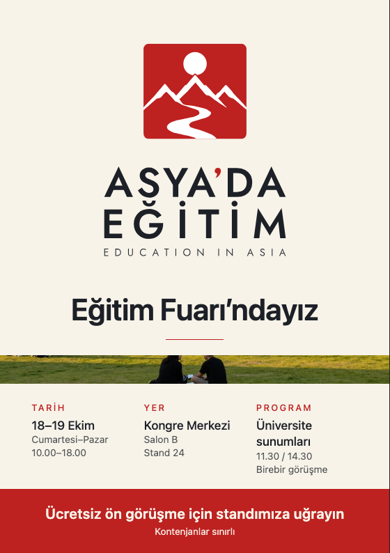
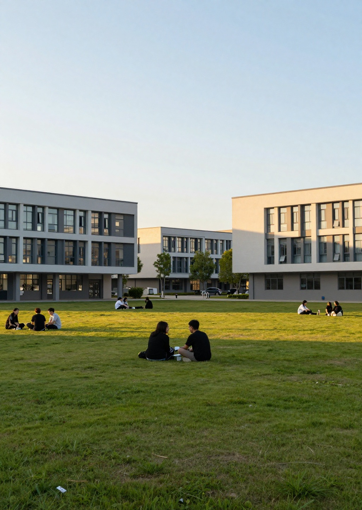

ASYA'DA EĞİTİM / VISUAL SYSTEM — PHASE 1
Üç prototip.
Tek sistem.
Onaylı logo ailesi olduğu gibi kullanıldı; hiçbir logo veya yazı yeniden üretilmedi. Fotoğraflar metinsiz ve logosuz üretildi, kanonik kilitler sonradan birebir yerleştirildi. Siyah çerçeve, yırtık kâğıt kenarlığı ve jenerik Asya klişeleri yok.
01 / KARE SOSYAL MEDYA GÖNDERİSİ — 1080 × 1080
Sabah avlusu
Kilit: P-01 / light 360px (min 352px) • Kilit SHA: cdc4394d9fe6… • Mühür SHA: 8f5d46f0… • Tek CTA, merkezi %80 güvenli alan.

Art-direction: neden bu fotoğraf?
Sabah ışığında modern bir üniversite avlusu — beton + ahşap cepheler, arkası dönük öğrenciler, dağlar ve geniş boş gökyüzü. Kart ortada kâğıt zeminde oturduğu için fotoğraf bir çerçeve gibi çalışıyor; göz önce kilide, sonra başlığa iniyor (1-2-3 hiyerarşisi).
Logo-safe alan: kartın kendisi kâğıt zemin olduğundan kontrast AA sorunu yok; kilit minimum boyutun (360 ≥ 352px) üzerinde. Kırmızı yalnızca göz etiketi ve CTA hapında — 60/30/10 disiplini korunuyor.

Saf üretim karesi — model çıktısında yazı, logo, tabela ve çerçeve yok (tohum 11). Kilit ve tipografi sonradan HTML/SVG ile eklendi.
02 / DİKEY INSTAGRAM KAMPANYASI — 1080 × 1350 (4:5)
Yaprakların altındaki yol
Kilit: H-02 / light 540px (min 528px) • Kilit SHA: 18b0b2b3a5ad… • Mühür SHA: 8f5d46f0… • Üst bant + alt gradyan, tek CTA.

Art-direction: neden bu fotoğraf?
Ağaçlı bir kampüs yolu, arkası dönük tek öğrenci ve cam/taș fakülte binaları. Yaprak tüneli doğal bir odak hunisi kuruyor; yol gözü alta, başlığa taşıyor. Üstteki kâğıt masthead bandı kilidi gün ışığında tam kontrastla taşıyor; alttaki mürekkep gradyanı açık renk başlığı AAA'ya yakın kontrasta yükseltiyor.
Klişe kontrolü: kiraz çiçeği, fener, ejderha, mezuniyet kepi yok. Sıradan bir sabah — güven veren, belgesel bir kampüs anı.

Saf üretim karesi — yazı ve logo yok (tohum 22). Soldaki küçük koyu pano okunaksız ve flu; üretimde tabela metni oluşmadı.
03 / EĞİTİM FUARI EL İLANI — A5 (148 × 210mm)
Fuar masası ciddiyeti
Kilit: F-05 / light 80mm (min 75mm) • Kilit SHA: e1892f677d49… • Mühür SHA: 8f5d46f0… • Kâğıt zemin, tek odak, kırmızı bilgi bandı.

Art-direction: neden bu fotoğraf?
Altın saatte çim amfi: uzakta oturan öğrenci grupları, arkada modern fakülte binaları. Fotoğraf yalnızca kanıt şeridi — sayfanın otoritesi F-05 armasında ve tipografik ızgarada. Üç sütunlu bilgi ızgarası (tarih / yer / program) fuar standında 2 metreden okunur; kırmızı alt bant tek eylemi söylüyor.
Baskı notu: prototip ekran provasıdır; üretimde 300 DPI + 3–5mm taşma payı gerekir.

Saf üretim karesi — yazı, logo ve pankart yok (tohum 33). Gökyüzü boşluğu başlık için değil, nefes için kullanıldı.
TEKNİK KANIT
Ne değişmedi?
Üç kilit de manifestteki tam SVG dosyaları olarak yerleştirildi (yeniden çizim, font ikamesi, renklendirme ve geometri değişikliği yok). Görüntü modeli yalnızca arka plan üretti. Doğrulayıcı: python3 studio/tools/verify_asyada_canonical_lockups.py — PASS (15 kayıt). Üretim harcaması: 3 görsel (kota 20→17). Düzeltme üretimi yapılmadı.
Faz-1 üretim manifestosu (kilit SHA + raster SHA) • Kanonik galeri • Mühür galerisi
Mühür SHA-256: 8f5d46f0302c4cc7e3765d3bfce9445f842dbd92f1e0f8fbe99f9f509c77e11a